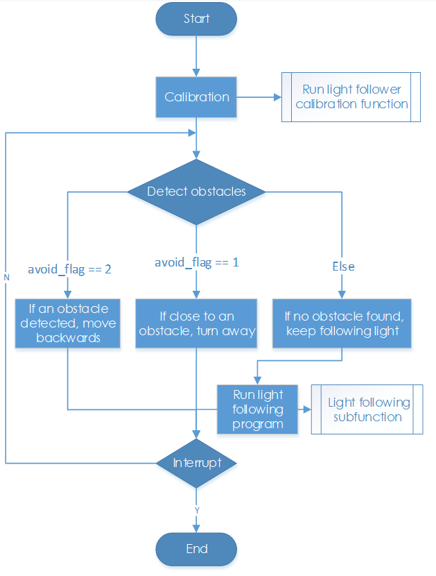

組合せ¶
したがって、このスマートカーは3つの異なる機能でスマートになる。しかし、1つのセンサーモジュールだけでは十分ではないと思っているか？それらのセンサーモジュールを1つに組み合わせてみてください！ここでは、実験を示す-参照用の障害物回避によるライトフォロー。
ライトフォロアを使用して車を走行させると、ライトを追うときに障害物にぶつかる場合がある。また、車を後退させるのはあまり便利ではない（ただし、配列が[1,0,1]である場合、車を後退させると設定したが、車が動いていて、ライトが時々正確にできない場合があるため、これらの値を取得することは難しい）。だから、板紙や足で車を後退させることもできるので、それがとても簡単である。
この例のプログラムを以下で確認してください。
まず、車のライトフォロアモジュールと超音波障害物回避モジュールを組み立てる。
ssh経由でコンピューターのRaspberry Piにログインし、ディレクトリに入る
cd ~/SunFounder_PiCar-S/example
コードを実行する。
python3 light_with_obsavoidance.py
動作原理¶
障害物回避をライトフォローよりも優先順位を高く設定する。車の前に障害物がある場合、障害物から離れて軌道に戻る。そうでない場合、車はライトを追従する。
車のライトフォローと障害物回避はセンサーモジュールに依存するため、2つのセンサーのステータスを個別に読み取る2つの関数を設定し、それらの関数から返されるフラグに値を割り当てる：state_light()**と**state_sonic()。
関数**state_sonic()**は、戻り値は**avoid_flag**である。
関数**state_light()**では、戻り値は**light_flag**である。
メインプログラム**main() **は、*8avoid_flag**と**light_flag**に従って対応するプログラムを実行し、**avoid_flag**は優先順位となっている。
